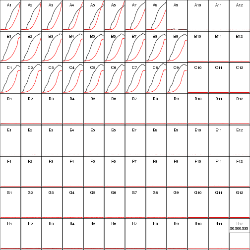

| # | Experiment | Theory |
|---|---|---|
| 1 | Using R packages: platexpress, grofit, etc. |
The Basics: What is Exponential Growth? |
| 2 | The Experiment: View and Analyze Data | Statistics: Measurement Errors |
| 3 | The Result: Summary Plots | The Model: Growth vs. Expression Rates |


Rainer Machne
| # | Experiment | Theory |
|---|---|---|
| 1 | Using R packages: platexpress, grofit, etc. |
The Basics: What is Exponential Growth? |
| 2 | The Experiment: View and Analyze Data | Statistics: Measurement Errors |
| 3 | The Result: Summary Plots | The Model: Growth vs. Expression Rates |

base
lm(log(X) ~ time)nls(X ~ X0*exp(mu*time))grofit, growthcurver or growthratecran, bioconductor & githubinstall.packages(c("grofit","growthcurver")) # at CRAN
source("https://bioconductor.org/biocLite.R") # at bioconductor
biocLite("cellGrowth")
install.packages("devtools") # R development tools
library(devtools)
install_github("raim/platexpress") # at github
## load the package & explore
library(platexpress)
?platexpress # VIEW HELP FILES
vignette("platexpress") # READ THE VIGNETTE
demo("demo_ap12") # RUN THE DEMO
getData # SEE WHAT A FUNCTION DOES: just type without brackets
## APPLY TO YOUR DATA:
plate <- readPlateMap("IPTG_Testreihe_3.csv")
files <- c("20161201_20161201 Praktikum - pRAJ11 1_Absorbance.CSV",
"20161201_20161201 Praktikum - pRAJ11 1_Fluorescence.CSV")
raw <- readPlateData(files, type="BMG")
viewPlate(raw)
\[ \begin{equation*} \begin{aligned} \frac{\text{d}X(t)}{\text{d}t} =& \mu X(t)\\ X(t) =& X(0) e^{\mu t}\\ \end{aligned} \end{equation*} \]
time <- seq(0,10,0.1) # hours
mu <- 0.3 # specific growth rate, hour^-1
x0 <- 0.01 # the inoculum: cell density, cells liter^-1
xt <- x0 * exp(mu*time)
par(mai=c(.75,.75,.1,.1),mgp=c(1.5,.5,0),cex=1.2)
plot(time, xt,
xlab="time, h",ylab=expression(X[0]*e^(mu*t)))

\[ \begin{equation*} \begin{aligned} \frac{\text{d}X(t)}{\text{d}t} =& \mu X(t)\\ X(t) =& X(0) e^{\mu t}\\ \ln \frac{X(t)}{X(0)} =& \mu t \end{aligned} \end{equation*} \]
time <- seq(0,10,0.1) # hours
mu <- 0.3 # specific growth rate, hour^-1
x0 <- 0.01 # the inoculum: cell density, cells liter^-1
xt <- x0 * exp(mu*time)
par(mai=c(.75,.75,.1,.1),mgp=c(1.5,.5,0),cex=1.2)
plot(time, log(xt/x0),
xlab="time, h",ylab=expression(ln(X(t)/X[0])))

\[ \begin{equation*} \begin{aligned} \frac{\text{d}X(t)}{\text{d}t} =& \mu X(t)\\ X(t) =& X(0) e^{\mu t}\\ \ln \frac{X(t)}{X(0)} =& \mu t \end{aligned} \end{equation*} \]
par(mai=c(.75,.75,.1,.1),mgp=c(1.5,.5,0),cex=1.2)
plot(time, log(xt/x0),
xlab="time, h",ylab=expression(ln(X(t)/X[0])))
x1 <- .05; idx1 <- which(abs(xt-x1)==min(abs(xt-x1)))
x2 <- .1; idx2 <- which(abs(xt-x2)==min(abs(xt-x2)))
lines(x=time[c(idx1,idx2)],
y=log(xt[c(idx1,idx1)]/x0),col=2)
lines(x=time[c(idx2,idx2)],
y=log(xt[c(idx1,idx2)]/x0),col=2)

\[ \begin{equation*} \begin{aligned} \frac{\text{d}X(t)}{\text{d}t} =& \mu X(t)\\ X(t) =& X(0) e^{\mu t}\\ t_D =& \frac{ln(2)}{\mu} \end{aligned} \end{equation*} \]
par(mai=c(.75,.75,.1,.1),mgp=c(1.5,.5,0),cex=1.2)
plot(time, log(xt/x0),
xlab="time, h",ylab=expression(ln(X(t)/X[0])))
x1 <- .05; idx1 <- which(abs(xt-x1)==min(abs(xt-x1)))
x2 <- .1; idx2 <- which(abs(xt-x2)==min(abs(xt-x2)))
lines(x=time[c(idx1,idx2)],
y=log(xt[c(idx1,idx1)]/x0),col=2)
lines(x=time[c(idx2,idx2)],
y=log(xt[c(idx1,idx2)]/x0),col=2)